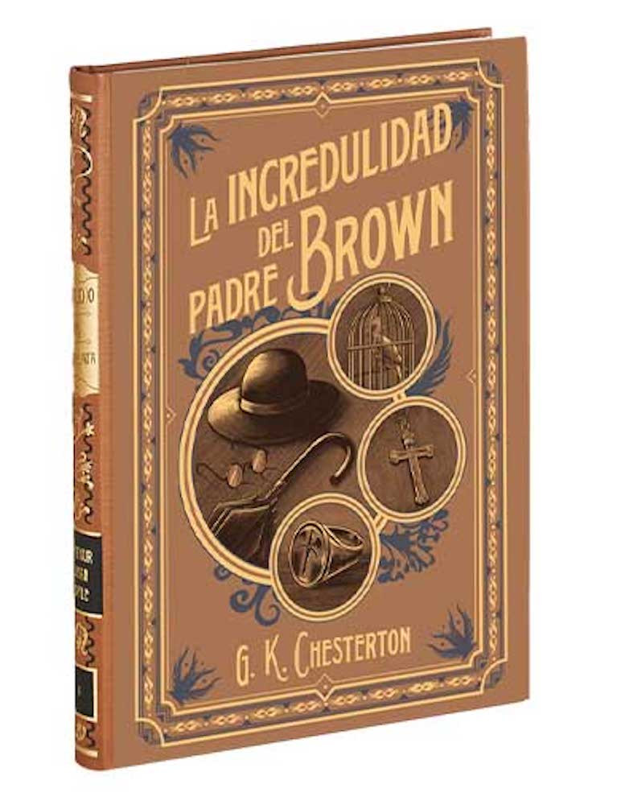
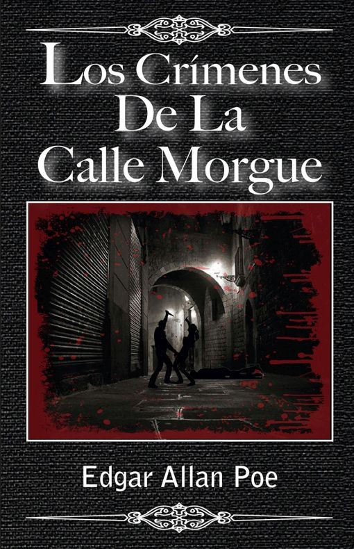
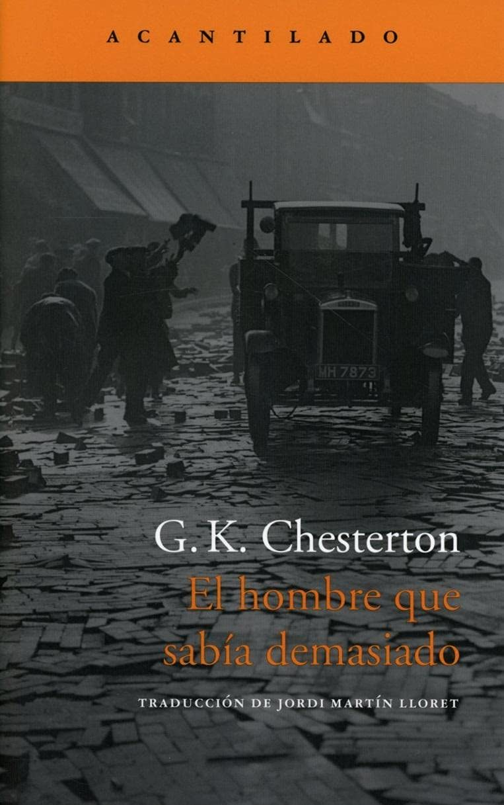
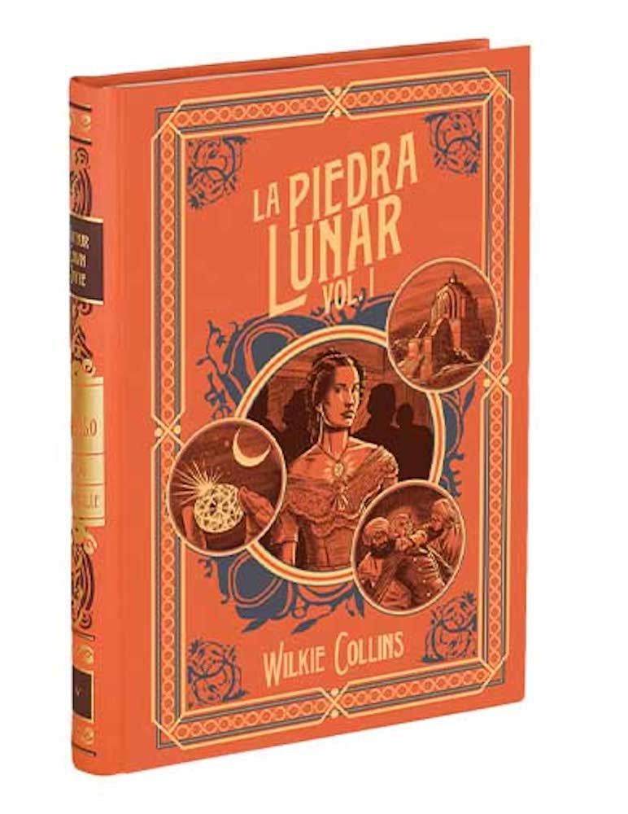
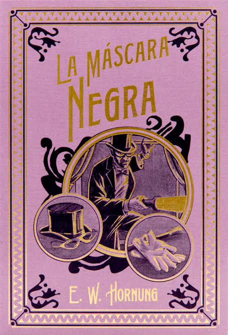
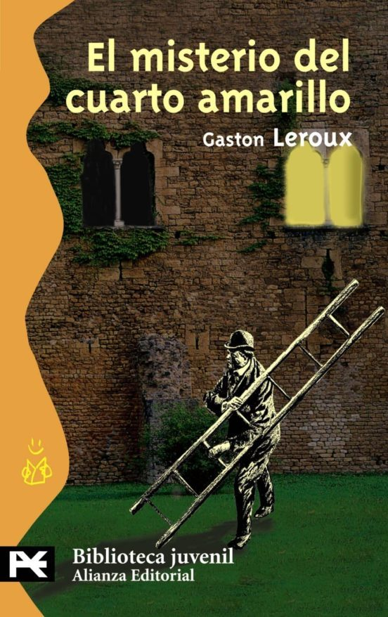
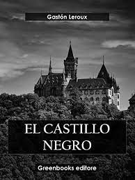

Fecha de publicacion: Viernes 03 de Noviembre del 2023
La incredulidad del padre Brown
Gilbert Keith Chesterton
Paginas: 96
Editorial: Salvat
Año de primera Edicion: 1926
Comprar en Amazon
Compra en El Árbol
Compra en Mercado Libre

Sinopsis: "La incredulidad del Padre Brown" es una colección de cuentos de detectives escritos por G.K. Chesterton. Los relatos siguen al Padre Brown, un sacerdote católico con una mente aguda y una profunda comprensión de la moralidad y la psicología. A través de su fe y su intelecto, el Padre Brown resuelve crímenes aparentemente inexplicables, explorando cuestiones de moralidad y redención en el proceso. A lo largo de la obra, demuestra que su enfoque único y efectivo para desentrañar los misterios más oscuros está arraigado en su profunda comprensión de la naturaleza humana, a pesar de su humilde apariencia como sacerdote católico.
Publicado por: Alejandro Durán García
Fecha de publicacion: Sabado 04 de Noviembre del 2023
Crimenes de la calle Morgue
Edgar Allá Poe
Paginas: 128
Editorial: Edaf, S.L.
Año de primera Edicion: 1841
Comprar en Amazon
Compra en Agapea
Compra en Samborns

Sinopsis: "Los Crímenes de la Calle Morgue" es un relato de detectives escrito por Edgar Allan Poe, publicado en 1841. La historia se centra en la investigación de un enigmático doble asesinato en un apartamento cerrado desde dentro en la Calle Morgue de París. Los crímenes son excepcionalmente misteriosos debido a la falta de una entrada o salida evidente para el asesino, así como a los testimonios de testigos que alegan haber oído voces inhumanas. El inteligente C. Auguste Dupin asume el papel de detective principal y, utilizando su astucia y agudeza, descubre la verdad detrás de los crímenes en un emocionante desenlace. Esta narración es ampliamente reconocida como un pionero en el género de la novela de detectives y ha dejado una huella indeleble en la literatura de misterio.
Publicado por: Itari García Osorio
Fecha de publicacion: Domingo 05 de Noviembre del 2023
El valle del terror
Arthur Conan Doyle
Paginas: 264
Editorial: Alianza
Año de primera Edicion: 1915
Comprar en Amazon
Compra en Librerias Gandhi
Compra en Iberlibro
Sinopsis: "La Cañada del Misterio" es una novela escrita por Sir Arthur Conan Doyle y publicada por primera vez en 1915. Es una de las cuatro obras completas protagonizadas por el afamado detective Sherlock Holmes y se caracteriza por combinar elementos de intriga y acción. La novela representa una amalgama de misterio, suspenso y drama, y proporciona una perspectiva más amplia de la capacidad deductiva de Sherlock Holmes, así como de su habilidad para resolver casos en apariencia insolubles, la investigación, Holmes y Watson desenmarañan una compleja trama que involucra vendettas personales, conspiraciones y crímenes brutales. "
Publicado por: Nestor Lopez Galindo
Fecha de publicacion:Lunes 06 de Noviembre del 2023
El hombre que sabia demasiado
Gilbert Keith Chesterton
Paginas: 24
Editorial: Acantilado
Año de primera Edicion: 1922
Comprar en Gandhi
Compra en Google Books
Compra en Amazon

Sinopsis: "El hombre que sabía demasiado" es una obra literaria que ha ganado el elogio y la admiración de figuras literarias destacadas como Jorge Luis Borges. En esta novela, el renombrado escritor británico G.K. Chesterton nos introduce en el mundo de Horne Fisher, un funcionario del Imperio con una perspectiva única y una habilidad excepcional para resolver misterios. A lo largo de su carrera, Fisher se ve involucrado en una serie de enigmáticos asesinatos, cada uno de los cuales parece más complejo y misterioso de lo que aparenta a simple vista.
La trama se desarrolla en la Inglaterra eduardiana, un período de gran cambio social y político, lo que añade profundidad y contexto a la historia. A través de la narrativa de Chesterton, los lectores son transportados a un mundo lleno de intrigas, suspense y cuestionamientos sobre la moralidad y la naturaleza humana
Publicado por: Monica Jezabel Rodriguez Granados
Fecha de publicacion: Martes 07 de Noviembre del 2023
La piedra lunar v1
Wilkie Collins
Paginas: 720
Editorial: Debolsillo
Año de primera Edicion: 1868
Comprar en Amazon
Compra en Agapea
Compra en Gandhi

Sinopsis: "La Piedra Lunar" es una novela de misterio escrita por Wilkie Collins y publicada por primera vez en 1868. La historia gira en torno a una extraordinaria gema conocida como la Piedra Lunar, que es robada de un templo hindú y posteriormente desencadena una serie de eventos misteriosos y conflictos.
La narrativa se presenta en forma de múltiples testimonios y relatos de varios personajes, lo que le da a la novela una estructura epistolar. La historia comienza con el robo de la Piedra Lunar durante una fiesta en la mansión Verinder en Inglaterra. A medida que se desarrolla la trama, se descubre que la piedra está maldita y trae desgracia a quienes la poseen. La novela se centra en los esfuerzos para recuperar la gema y resolver el misterio de su robo.
A lo largo de la novela, los personajes se ven atrapados en una red de intrigas, engaños y giros inesperados. Collins utiliza una variedad de voces narrativas para dar vida a los personajes y presentar sus perspectivas sobre los eventos, lo que agrega profundidad y complejidad a la trama.
Publicado por: Aaron Teutle Gonzalez
Fecha de publicacion: Miercoles 08 de Noviembre del 2023
Las aventuras de sherlock holmes
Sir Arthur Conan Doyle
Paginas: 368
Editorial: George Newnes Ltd
Año de primera Edicion: 1939
Comprar en Amazon
Compra en Gandhi
Compra en Liverpool
Sinopsis: "Las aventuras de Sherlock Holmes" es una colección de doce relatos escritos
por Sir Arthur Conan Doyle que siguen las hazañas del icónico detective Sherlock Holmes
y su fiel compañero, el Dr. John Watson, mientras resuelven una serie de misterios y casos
intrigantes en la Inglaterra victoriana. Cada relato destaca la brillante mente deductiva de
Holmes, su aguda observación y su profundo conocimiento de la psicología humana. A lo largo
de la obra, se abordan casos notables, como la búsqueda de una fotografía comprometedora,
la investigación de un extraño club de pelirrojos y la recuperación de una valiosa joya de
la corona, todo ello envuelto en el encanto de la época victoriana.
Publicado por: Alejandro Duràn Garcìa
Fecha de publicacion: jueves 09 de Noviembre del 2023
La máscara negra
William Hornung
Paginas: 189
Editorial: Abraxas
Año de primera Edicion: 1905
Comprar en Amazon
Compra en Buscalibre
Compra en libre libro

Sinopsis: "La Máscara Negra" es una colección de relatos escrita por Ernest William Hornung y publicada en 1905. Los relatos siguen las aventuras del carismático ladrón y caballero A. J. Raffles y su amigo y cómplice Bunny Manders en el Londres de principios del siglo XX. Aunque Raffles es un miembro respetado de la alta sociedad londinense, lleva una doble vida como ladrón maestro, robando joyas y arte de las mansiones más opulentas.
Cada relato presenta un nuevo plan ingenioso de Raffles para cometer robos audaces y escapar de la detección de la policía. A lo largo de la colección, se exploran temas de la moralidad, la emoción del riesgo y la lealtad entre los personajes.
"La Máscara Negra" es una obra que desafía las expectativas al presentar a un protagonista carismático que es un ladrón, y el lector se encuentra dividido entre simpatizar con sus hazañas astutas y cuestionar la ética de sus actos delictivos. La narrativa hábil de Hornung y los giros inesperados hacen que estos relatos sean apasionantes y entretenidos, y la obra ha dejado una impresión duradera en la literatura de aventuras y misterio.
Publicado por: Itari García Osorio
Fecha de publicacion: Viernes 10 de Noviembre del 2023
El misterio del cuarto amarillo
Gastón Leroux
Paginas: 306
Editorial: Alianza
Año de primera Edicion: 2008
Comprar en Buscalibre
Compra en Comprarlibro
Compra en Amazon

Sinopsis: "El misterio del cuarto amarillo" es una novela de misterio escrita por Gaston Leroux en 1907. La trama gira en torno a un enigma intrigante que tiene lugar en el castillo de Glandier. Todo comienza cuando Mathilde Stangerson, la hija del profesor Joseph Rouletabille, sufre un ataque en su cuarto amarillo, que estaba cerrado con llave. A pesar de las aparentes circunstancias imposibles, la joven resulta gravemente herida, y no se encuentra ningún rastro del agresor. El periodista y detective aficionado Joseph Rouletabille toma la iniciativa para resolver el misterio. Utilizando su astucia y observación meticulosa, Rouletabille examina cada detalle del caso en su intento por descubrir la verdad detrás del inexplicable incidente. A medida que avanza la investigación, se desvelan secretos oscuros y sorpresas inesperadas, llevando al lector por un intrincado laberinto de giros y vueltas narrativas. La resolución del enigma resulta tan fascinante como el propio misterio, consolidando la novela como una obra clásica en el género de misterio y detectivesco."
Publicado por: Nestor Lopez Galindo
Fecha de publicacion: Sabado 11 de Noviembre del 2023
El castillo negro
Gastón Leroux
Paginas: 309
Editorial: Greenbooks Editore
Año de primera Edicion: 1916
Comprar en Gandhi
Compra en Everand
Compra en Amazon

Sinopsis: "El Castillo Negro es el cuarto volumen de las aventuras extraordinarias de Joseph Rouletabille, reportero, según las bautizó Leroux al publicar el primer volumen de la serie, El misterio del Cuarto Amarillo (1908). Si en Rouletabille en Rusia, nuestro reportero viajaba a las tierras del zar, en El Castillo Negro viaja a Bulgaria -acompañado por su colega La Candeur y su criado Modeste- en pos de Ivanna Ivanovna, la lobezna de los Balcanes, hermosa e intrigante joven de la cual está profundamente enamorado. La novela, publicada en 1916, se sitúa en el escenario de "la primera guerra de los Balcanes" y en los comienzos de la segunda, en vísperas del "gran conflicto mundial que se estaba preparando en los entrepaños austro-alemanes""
Publicado por: Monica Jezabel Rodriguez Granados
Fecha de publicacion: Domingo 12 de Noviembre del 2023
Los Cuatro Hombres Justos
Edgar Wallace
Paginas: 150
Editorial: Calixta
Año de primera Edicion: 1920
Comprar en Amazon
Compra en Buscalibre
Compra en calixta
Sinopsis: "Los Cuatro Hombres Justos" es una novela de suspense escrita por Edgar Wallace y publicada en 1920. La historia se desarrolla en la Europa de posguerra y sigue a un grupo secreto conocido como "Los Cuatro Hombres Justos", quienes han jurado vengar las injusticias cometidas por aquellos que han escapado del alcance de la ley.
El grupo, compuesto por individuos con habilidades diversas, busca hacer justicia por sus propias manos, llevando a cabo ejecuciones de personas que consideran criminales pero que han eludido la acción legal. Sin embargo, a medida que avanzan en su cruzada, las acciones del grupo desencadenan una serie de eventos imprevistos y complicaciones.
El protagonista de la historia es un periodista llamado Frank Froest, quien se encuentra involucrado en la trama cuando comienza a investigar los crímenes aparentemente justificados de "Los Cuatro Hombres Justos". A medida que Froest profundiza en la historia, descubre la complejidad de las motivaciones y la moralidad detrás de los actos del grupo.
La novela explora temas como la moralidad, la venganza y la justicia, y mantiene a los lectores en vilo con sus giros inesperados y personajes intrigantes. Wallace, conocido por sus tramas absorbentes y su capacidad para mantener el suspense, ofrece en "Los Cuatro Hombres Justos" una historia que cuestiona la naturaleza de la justicia y las acciones individuales en busca de la verdad y la equidad.
Publicado por: Aaron Teutle Gonzalez